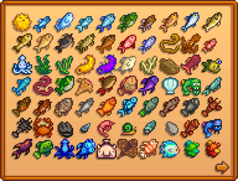
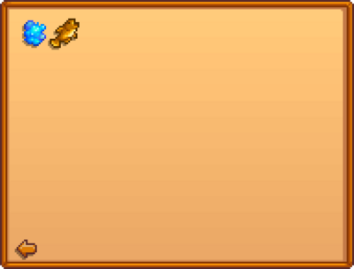
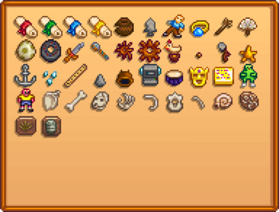
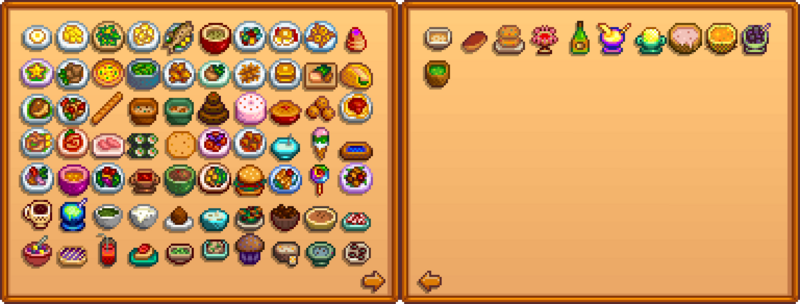

Collections
The Collections tab acts like a record of which items have been discovered or shipped and in what quantities.
Items Shipped
This tab keeps track of the type and amount of specific items shipped via the Shipping Bin on The Farm, or via the Mini-Shipping Bin.


Page One
Page Two
Page Three
| Magma Cap | Bone Fragment | Radioactive Ore | Radioactive Bar | Smoked Fish (any) | Moss | Mystic Syrup | Raisins | Dried Fruit (any) | Dried Mushrooms (any) |
| Carrot | Summer Squash | Broccoli | Powdermelon |
Fish
This tab keeps track of the type and number of Fish caught with either a fishing pole or a Crab Pot. Entries are added upon catching the fish. The fish does not need to be shipped to count towards the collection.
Fish obtained in other ways (e.g. by Foraging, purchasing from Krobus or the Traveling Cart, dropped by monsters) do not count towards the Fish Collection.


Page One
Page Two
| Sea Jelly | Goby |
Artifacts
This tab keeps track of the type and amount of Artifacts collected. Artifacts are added to the collection tab when donated to the Museum. Their names and descriptions will not appear until they are donated.

Minerals
This tab keeps track of the type and amount of Minerals collected. Minerals are added to the collection tab when donated to the Museum. Their names and descriptions will not appear until they are donated.

Cooking
This tab keeps track of the type and amount of dishes the player has "cooked" in the Farmhouse kitchen. Dishes do not need to be shipped to count towards the collection. Dishes for which the recipe is known but have not yet been cooked appear greyed-out. Dishes with unknown recipes show "???".

Page One
Page Two
| Lobster Bisque | Maple Bar | Crab Cakes | Shrimp Cocktail | Ginger Ale | Banana Pudding | Mango Sticky Rice | Poi | Tropical Curry | Squid Ink Ravioli |
| Moss Soup |
Achievements
See: Achievements
Letters
See: Letters
Secret Notes
See: Secret Notes
Journal Scraps
See: Journal Scraps
History
- 1.6.9: Artifacts and minerals descriptions do not appear in the collections tab until donated to the Museum.